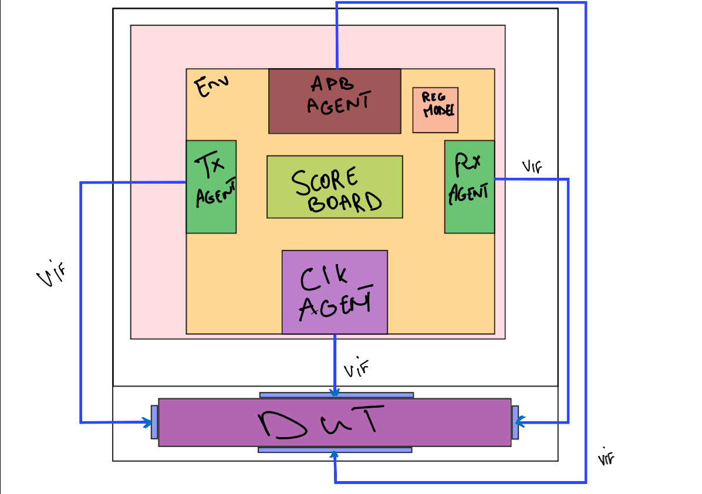
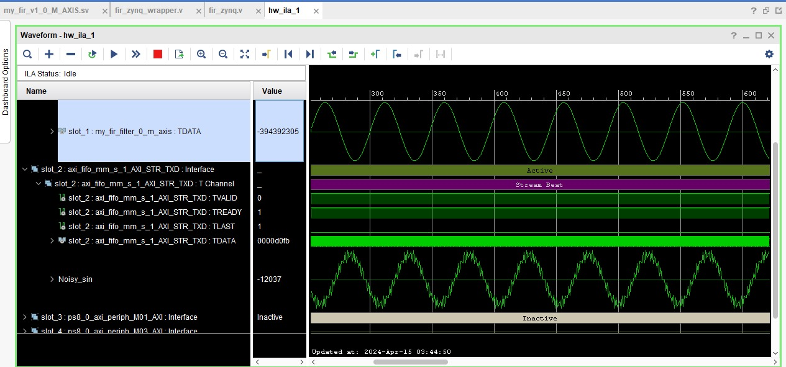
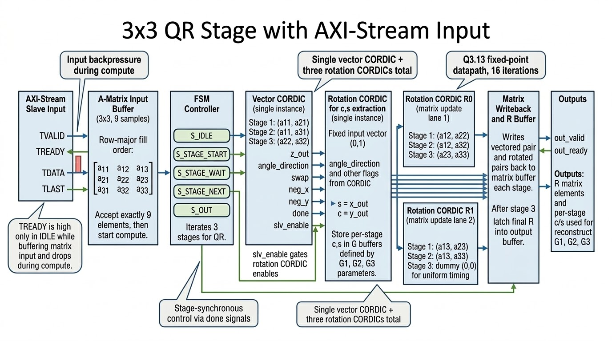
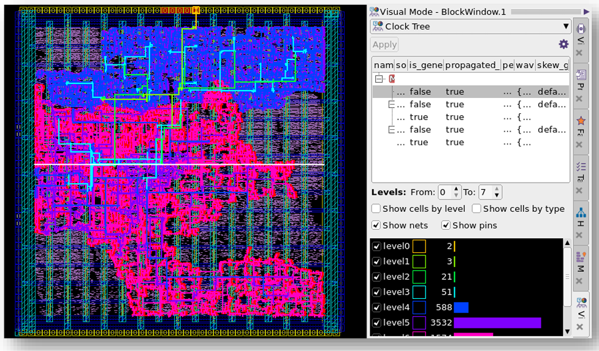
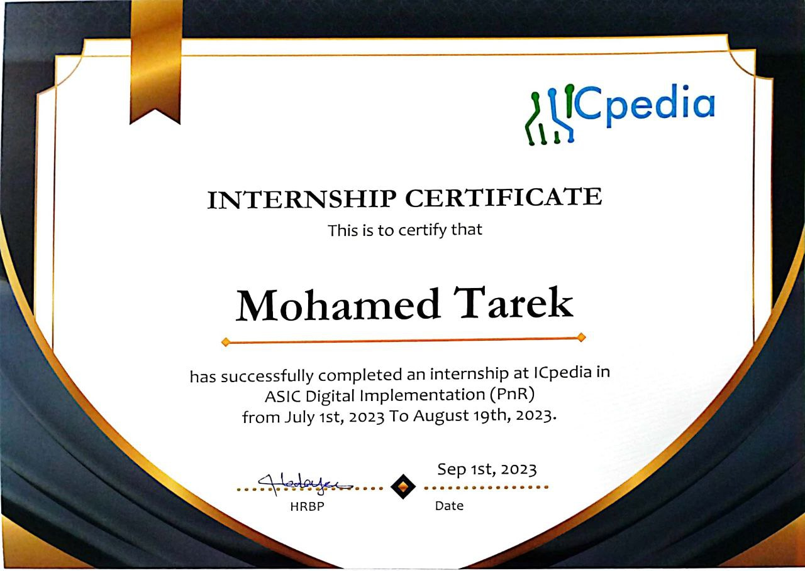
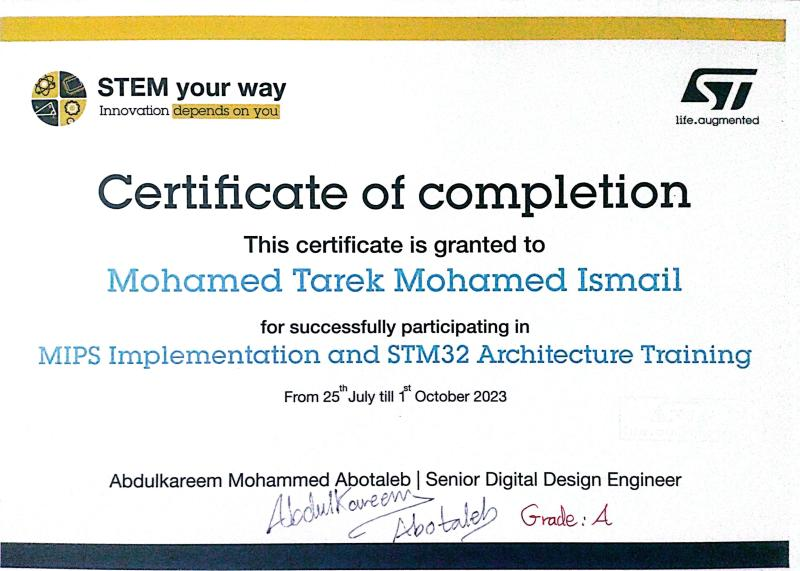
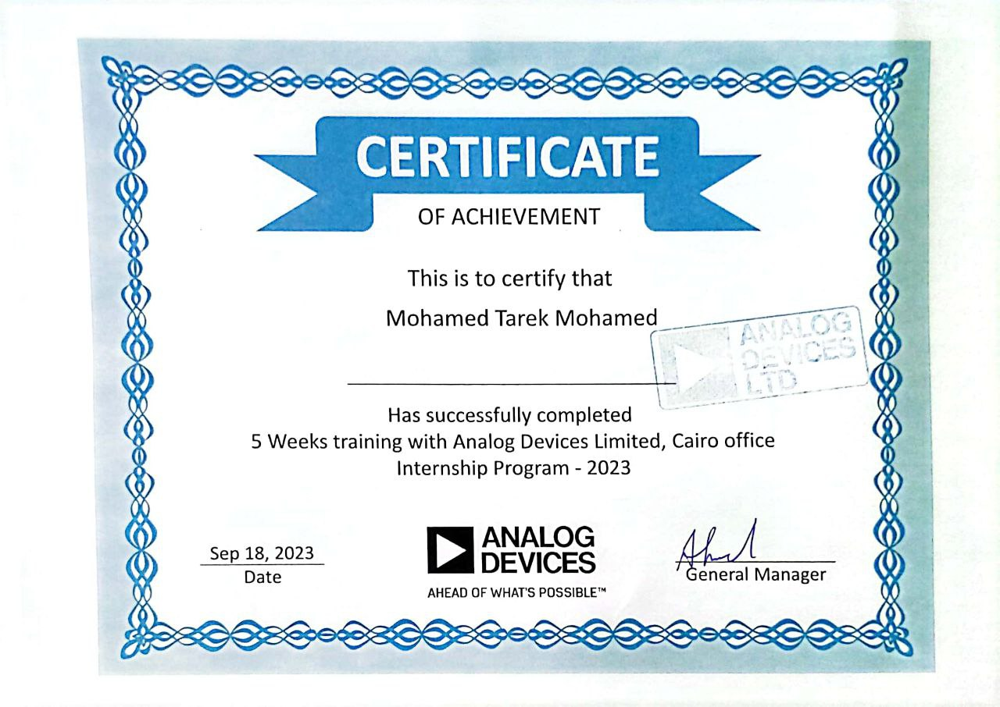
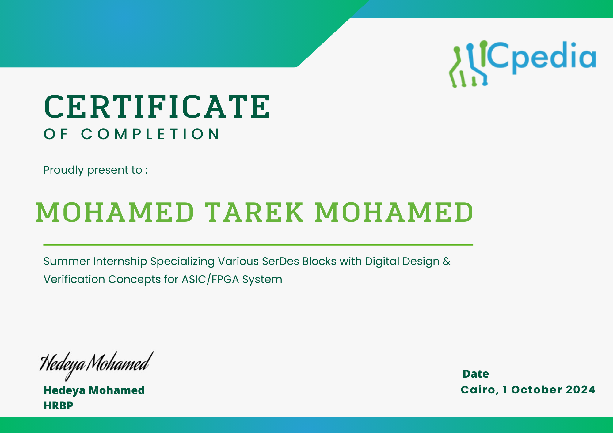
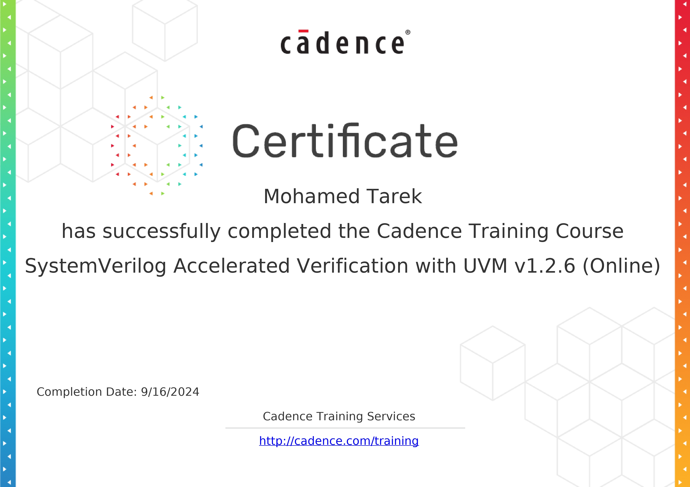
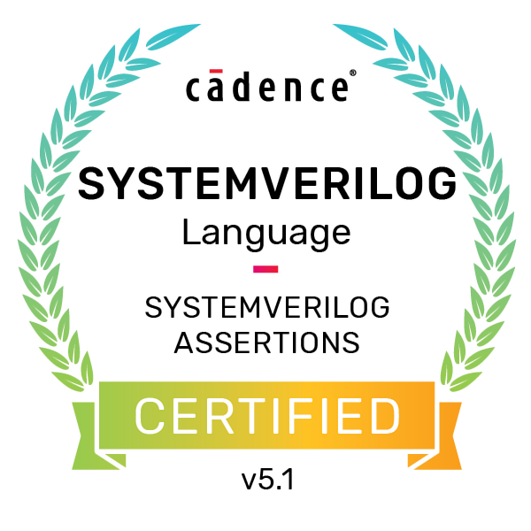

SystemVerilog
Parameterized RTL, interfaces, assertions, coverage-driven coding style.
Digital Design and Verification Engineer
End-to-end experience across architecture-aware RTL development, constrained-random verification, FPGA bring-up, and implementation-aware optimization.
I design and verify digital systems with a focus on correctness, traceability, and timing closure. My workflow bridges simulation-first validation with hardware prototyping, ensuring design intent is preserved from specification through implementation.
Parameterized RTL, interfaces, assertions, coverage-driven coding style.
Layered testbench architecture, scoreboarding, sequence libraries, and reusable VIP.
Rapid functional validation, board-level integration, and timing-aware debug.
Constraint strategy, synthesis/PnR awareness, and optimization for area, timing, and power.
Project cards pair objective technical summaries with image-focused artifacts and direct links.

Verified a rate-matching FIFO that compensates for recovered-clock and system-clock drift using SKP insertion and SKP drop logic driven by configurable occupancy thresholds. The UVM environment targeted continuous flow behavior, event signaling, and error-state robustness.

Developed an AXI-compatible transposed-form FIR IP with parameterized order and data width, then integrated and validated it on an AVNET U96 Zynq US+ platform using AXI-Lite/AXI-Stream, simulation correlation, and software-driven register-level verification from ARM A53.

3x3 matrix inversion accelerator using QR decomposition with iterative CORDIC arithmetic on a fixed-point Q3.13 datapath,AXI-Stream matrix loading, and a MATLAB reference model for algorithm correlation.

Implemented a PULPino/CV32E40P-based RISC-V microcontroller through a full physical-design flow including synthesis, floorplanning, power planning, placement, clock-tree synthesis, routing, and chip finishing, targeting High Performance DSP applications.
Duplicate one <article class="project-card">...</article> block inside
.projects-grid to add a project, or delete that block to remove a project.
Update image path, technical description, and .project-links URLs.
Verified coursework and professional training relevant to ASIC, FPGA, and verification.

Internship completion certificate focused on ASIC digital implementation, including place-and-route awareness and practical implementation workflow exposure.

Completed architecture and implementation training covering embedded processor concepts, microcontroller architecture, and hands-on digital design exercises.

Completed five-week internship training focused on applied electronics engineering workflow and industry practices in a professional product-oriented environment.

Certificate recognizes internship work on SerDes-oriented blocks with digital design and verification concepts for ASIC/FPGA systems.

Cadence training certificate covering accelerated UVM-based verification methodology, practical SystemVerilog usage, and scalable testbench development concepts.

Highlights practical understanding of assertion-based verification concepts used for protocol checking, property validation, and regression confidence.